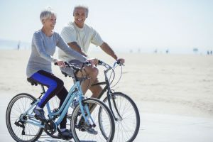

Overview
Purpose
My goal is to provide information about the mental, physical, and spiritual health benefits of cycling. Cycling gives you a sense of appreciating the world's beauty and feeling more connected to it. I want to emphasize that cycling is not merely a way to get around or get from point A to point B but also a way to take some time to focus and be present. Bike riding can enhance a person's balance, coordination, mental well-being, and strength. Exercising with a bike can have many beneficial effects on our lives.
Audience
Cycling is an activity for everyone, no matter their gender, age, or weight. Choosing to bike instead of driving reduces traffic and is extremely beneficial to the environment. Next time you have to go somewhere, ride a bike instead of getting in your car. By simply choosing environmentally-friendly transportation options sometimes, you can have a significant impact on the environment. Biking is a great sport for many reasons. Taking a quick bike ride in the afternoon can boost your energy levels and help you be more productive in the evening The extra boost of positivity that you give your mind is essential for your overall well-being. We can maintain a happy attitude in our everyday lives by riding our bikes regularly for psychological and mental reasons.
Branding
Website Logo

Style Guide
Color Palette
Palette URL: https://coolors.co/palette/a41623-f85e00-ffb563-ffd29d-918450| Primary | Secondary | Accent 1 | Accent 2 |
|---|---|---|---|
| #a41623 | #f85e00 | #ffb563 | #ffd29d |
Typography
Heading Font: Permanent Marker
Paragraph Font: Happy Monkey, Helvetica, sans-serif
Biking is a great way to improve your fitness at any age. Biking is relaxing and still beneficial to your health. It is not intimidating like other exercises. The process is fun, easy to maintain, and easy to learn.
Colored paragraph example
Some of the many benefits of biking include improved joint mobility, increased bone and muscle strength, improved posture, and improved coordination.
Navigation
Site Map
Content
Home page
The benefits of cycling go beyond being a great workout, but cycling can also be a great hobby for adventure seekers, letting you discover landscapes and views you would have missed when driving your car. A number of ways can be used to exercise, but recent research has shown that employees who bike to work are more productive. When we bike around our communities, we gain a greater appreciation for the beauty of the landscape. It is not just good for your mental and cardiovascular health that biking is a great activity. A person also develops spatial awareness when biking. Cycling in different environments can teach a person how to handle different terrains. A person's awareness also safeguards them and ensures they are aware of their surroundings. Among other things, it helps the individual learn how to ascend, descend, turn corners, and move quickly. Besides learning how to handle and utilize one's body weight, one must learn about the bike. A person's cycling skills can only be improved by making regular trips on a bike. If you are traveling short distances through heavy traffic, you will often be able to travel faster by bike than in an automobile. You can park your bicycle at the front of the lot and avoid paying tolls when you reach your destination. Taking the bike for a ride during the day can serve as your exercise for the day, so it is possible to make up for any time lost, as you won't have to schedule additional time for exercise. It will be difficult to notice you are exercising when you are cycling with your family members. Cycling increases your child's fitness awareness as well as prevents a child from becoming overweight. Children are kept active by riding bikes. For children to develop strong, healthy bones and muscles, most health experts recommend an hour of physical activity daily.
Images for the Home page

Health Benefits of regular cycling
Bike commuting can help you start your day without feeling stressed. Cycling offers therapeutic benefits because it promotes mindfulness. When we focus on the physical and engage mind and body purely on riding, we are brought away from negative thoughts, which take on a greater significance when we obsess over them. You'll be surprised how cycling can improve your sleep routine. You will be able to sleep peacefully at night by improving your mental health, controlling your stress levels, and minimizing your anxiety. Physical activity and being outdoors are two of the main reasons people prefer biking. Many people find that solo bike rides provide an opportunity for them to process their thoughts. Among other things, they are able to think about life's responsibilities. Cycles are also considered a great stress buster as they improve mental outlook. Social anxiety sufferers can take advantage of biking as an outlet to interact in a healthy way. Boosting the immune system is one of the best things about biking and exercising in general. Bike riding improves blood flow. It helps increase heart rate and increases blood oxygenation. All of these actions improve one's immune system.
Images for Health Benefits

Places to Cycle
Biking provides many opportunities to enjoy and explore the outdoors in California. Make small rides and pick one goal, such as climbing a mountain or visiting your favorite market that you want to visit, and then work your way up to that. Listed below are some favorite California cycling spots: Latigo Canyon Loop, Cold Canyon Loop, Mulholland Highway Double Loop, Mulholland Highway Loop, Old Topanga Canyon Loop, Palos Verdes Classic Donut Loop, Mount Lee & Lake Hollywood Loop, LA Parks Loop, La Tuna Canyon Loop, East Chevy Chase Drive Loop. By riding bikes, people can pick up food, go for coffee, and shop at local stores, spending money within the neighborhood. The League of American Bicyclists reports that people who ride bikes are more likely to return to their local stores. There are many benefits to traveling by bike in comparison to driving a car. First, bicycles are a lot less expensive to maintain than cars.
Images for Places to Cycle

Wireframes
Create three wireframes for your site. One for each page and list them here
Home
[Any additional details about home that the wireframe does not make clear]
[Page 2]
[Any additional details about page 2 that the wireframe does not make clear]
[Page 3]
[Any additional details about page 3 that the wireframe does not make clear]